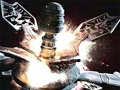
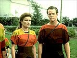
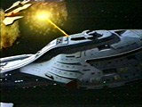
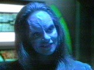

|
Janeway
vs. Primeira Diretriz, Parte I
 Assim
que entram para a Academia da Frota, todos os cadetes so
introduzidos Primeira Diretriz, o protocolo primordial da
Federao que impede a interferncia de seus oficiais no
desenvolvimento de outros povos. Os capites de naves estelares
sempre estiveram confortveis com essa lei, especialmente
Jean-Luc Picard, da USS Enterprise. Assim
que entram para a Academia da Frota, todos os cadetes so
introduzidos Primeira Diretriz, o protocolo primordial da
Federao que impede a interferncia de seus oficiais no
desenvolvimento de outros povos. Os capites de naves estelares
sempre estiveram confortveis com essa lei, especialmente
Jean-Luc Picard, da USS Enterprise.
Quando
a USS Voyager foi atirada ao tenebroso quadrante Delta, e quase
25% de sua tripulao passou a ser composta por maquis (como
visto em "Repression", do stimo ano da srie),
algumas regras e regulamentos tiveram de ser sacrificados para
garantir a sobrevivncia das 150 pessoas a bordo.
No incio da longa jornada para casa, a Kathryn Janeway estava
disposta a enfrentar uma viagem de quase 75 anos a fim de no
violar os ideais com os quais foi treinada. Entretanto, em
diversos momentos, embora no admitisse abertamente, a capit
infringiu a Primeira Diretriz.
 Um
exemplo clssico disso a destruio da estao do Guardio,
no piloto do seriado, o que deixou a tripulao desamparada a 70
mil anos-luz do quadrante Alfa. Ao disparar contra a estao,
Janeway estava protegendo os Ocampas e sua cidade contra a ameaa
Kazon. Isso reflete na balana de poder da regio, dado o
potencial tecnolgico da Voyager.
Apenas semanas mais tarde ("Time and Again"), ao
descobrir um planeta envolvido em uma catstrofe relacionada
energia polrica, a capit e Tom Paris alertam os nativos do
desastre prestes a ocorrer.
 J,
em "Prime Factors", um dilema surge: os
tripulantes encontram os Sikarians, povo que desenvolveu um
dispositivo que permitiria o deslocamento da nave 40 mil anos-luz
mais perto da Terra. J que as autoridades no estavam dispostas
a dividir o conhecimento devido ao seu prprio "cnon"
de leis, a capit abandonou a idia. Mas muitos de seus
oficiais, maquis ou federados, condenaram a idia e decidiram
obter a tecnologia por meios ilegais.
 Esse
ponto da srie marca bem a personalidade de Kathryn Janeway no
comeo de sua viagem. Ela cr e defende cegamente os
procedimentos-padro da Frota, sem ao menos considerar a situao
nica em que sua pequena nave e tripulao se encontram. No
entanto, abre algumas excees para povos do quadrante Delta.
 Em
"State of Flux", ela repreende severamente a
alferes Seska por negociar tecnologia com os Kazons, em troca de
proteo Voyager. Um replicador de alimentos foi causa de
declarao de guerra entre os Kazon-nistrim e a capit. Ser
que se os Kazons fossem Ocampas a postura seria a mesma?
Daniel
Sasaki co-editor do Trek
Brasilis
|